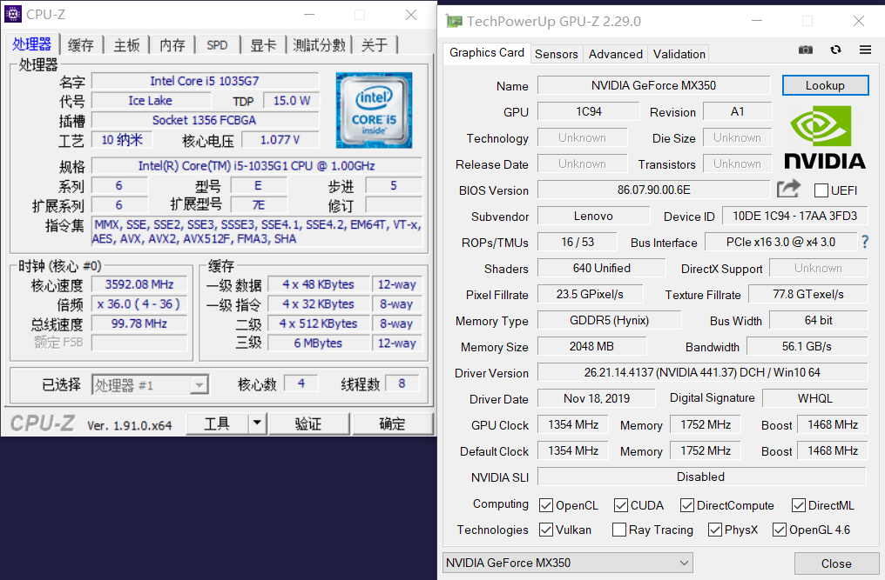

联想小新Air14 2020 I5-1035G1 16+512版本及MX350超频实测
2019年的轻薄笔记本市场上，5000元主流价位往往是一个取舍艰难的价位段，这个价位意味着成本的限制下不能做到完美的兼顾。大多数产品于妥协散热、做工、配置，或妥协给价格。终于在2020年2月末，联想更新了14寸轻薄本小新Air14 2020版本。这台电脑在各方面做的不错且没有明显的短板。
I5版本首发价格5099，I7版本5899，均返100E卡，实际价格为4999和5799。机子配置图如下。
到手开箱，联想本体包装还行。京东直接套个袋子就来了。Air14 1.2mm键程的键盘手感还行。

CPU-Z和GPU-Z信息，1035G1单核睿频3.6G，全核3.2G。Ice Lake也支持avx512，虽然对轻薄本这个特性并没什么卵用就对了。小新Pro14的MX350默认频率1354，Boost1468，显存1752。
将机器插电，调整至28W野兽模式。默认3DMark FS显卡分数为4291，CPU分数11146，综合分数3905。
使用MSI Afterburn，经过数次尝试最终确定了手上这块Mx350体质：主频1734，超频幅度18.12%。显存2252，超频幅度28.54%。3DMark FS显卡分数5060，比起默认提升了17.92%。综合得分4597。
在跑分时值得一提的是，MX350的默认TDP直奔40W。连接自带的65W适配器，电压0.99V。跑3dmark FS，电量能从100%掉到99%...
在MX350规格出来之后，网络上便有人认为MX350最大的性能瓶颈在于64bit的显存位宽，实测后我通过验证确实如此，MX350仅超频显存就能获得远超其主频带来的提升。这块源自GP107核心阉割再阉割的型号，老黄推出它的目的是代替旧款MX250以应对AMD新一代4000系APU核显Vega8，想来目的已经达到了，不得不佩服老黄刀法惊人。但目前已曝光的intel
Tiger Lake-U新核显Iris Xe 96EU在Geekbench4 OpenCL打平了MX350，所以MX350也可能是MX系列最短命的显卡了。